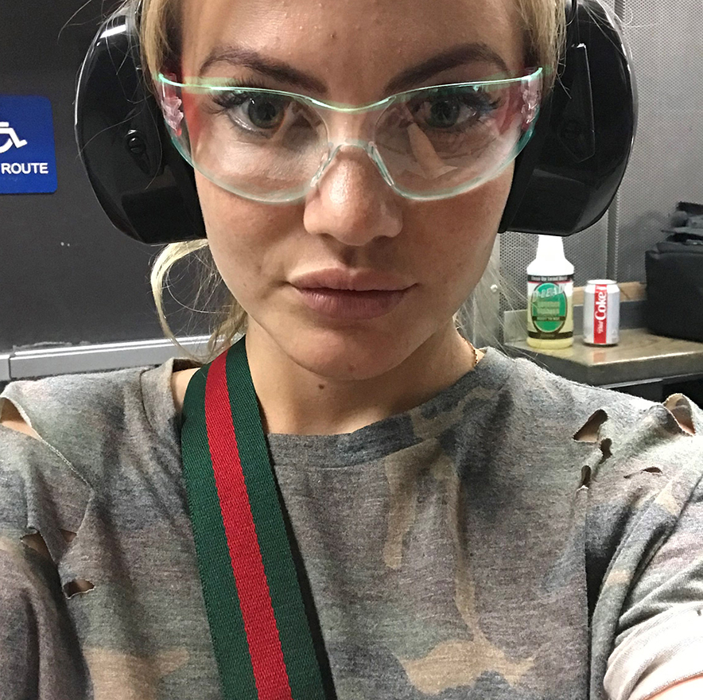

About Me

Welcome to my page! My name is Anastasia Ivashchenko, I was born in 1991, in a big cold city in Siberia. About 10 years ago, when I turned 20 years old, I packed my bags, said "Goodbye" to my family and friends, moved to California and never looked back. I've always been into photography but eventually chose my other field of interest as a primary source of income - information technologies. I'd like to share my story and portfolio, motivation, ambitions and goals with anyone who's inerested. You can also reach out to me for colaborations using the contact form on my page.
Today, leading a busy life in a fast-paced city, we absolutely have to make time for ourselves, explore our creativity and push our boundaries to open brighter and wider horizons.